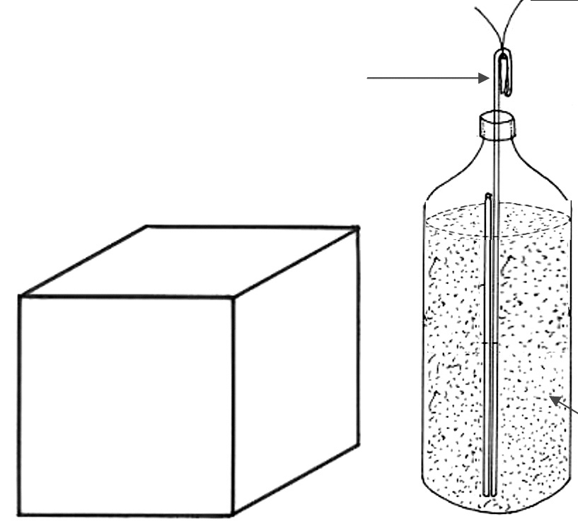
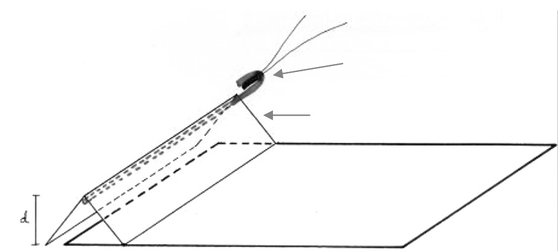
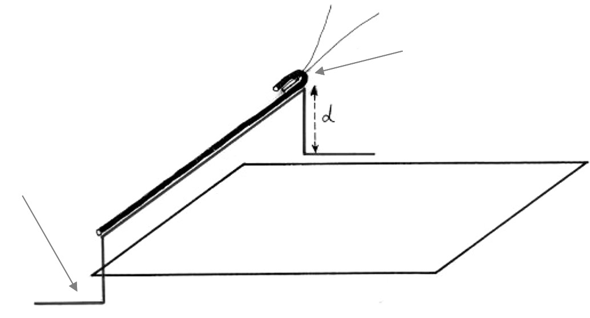

São aquelas que não provocam, em tese, alterações físico-químicas no objeto suspeito que sejam capazes de acioná-lo. Exemplos:
São aquelas que podem provocar alterações físico-químicas previsíveis no artefato, ativando-o. O principal objetivo é interromper o circuito de fogo. Exemplos:
Para cada caso, devem-se observar as vantagens e desvantagens do emprego de um ou outro método, sempre permanecendo o menor tempo possível próximo ao objeto suspeito.
O canhão d’água fundamenta-se basicamente na força hidrodinâmica. Consiste em um equipamento capaz de desarticular um artefato explosivo com grande probabilidade de não acioná-lo. É carregado com uma quantidade de água de aproximadamente 150 ml, que fica na luz do cano entre buchas plásticas. Essa carga é lançada com alta pressão no objeto suspeito, por uma carga propelente, confeccionada com cartucho de calibre 12, especialmente carregado. A coluna d’água e as buchas destroem o invólucro e arrastam violentamente o seu conteúdo.
Água - a força hidrodinâmica e a dispersão da água separam os elementos do artefato. Uso geral para a maioria dos alvos. Avon (gesso + esferas ocas metálicas + água) - balote rígido e relati vamente resistente que não provoca ricochete. Uso em alvos mais rígidos (ex: bomba tubo).
Se o artefato puder ser interpretado: atingir fios/baterias/mecanismos de acionamento. Se não for possível interpretar o artefato: obter a maior área de varredura dos elementos do artefato. Em tubo de PVC. Canhão posicionado a 45º da tampa (cap). Em tubo de ferro Canhão posicionado a 15º da tampa (cap).
Por vezes, a utilização do canhão d’água pode não ser o mais adequado ou pode-se, mesmo, não se dispor dele para atender a uma ocorrência de bomba. Nesses casos, a utilização de arranjos bastante simples pode dar excelentes resul tados, desde que o perito domine as técnicas de construção e aplicação desses petrechos.

Cordel detonador Garrafa plástica refrigerante 2 litros Água Artefato explosivo
Figura 13 - Desativação de artefato explosivo com garrafa plástica, cordel e água.
O cordel detonante, ao ser iniciado, irá lançar a massa de água contida na garrafa na direção radial e atingirá o artefato explosivo, provocando a separação dos seus componentes.
NP 10.

Detonador e cordel Cartão “V” Envelope suspeito
Figura 14 - Abertura remota de envelope suspeito com o uso de cordel em cartão formato V.
A onda explosiva e os fragmentos do revestimento plástico do cordel fazem com que o envelope se abra.

Detonador e cordel Fio rígido de cobre (chicote) Envelope suspeito
Figura 15 - Abertura remota de envelope com cordel e fio rígido( técnica do chicote).
A detonação do cordel provoca o arremesso do fio rígido (chicote), o qual provoca a abertura do envelope suspeito ao atingi-lo.